Phaere’s NPC Portraits for BG2
A RPG Dungeon Mod
Authors: Phaere and Rastor
Current Release Date: 6/16/2005
version 4.0
Table of Contents
- Introduction
- Installation Instructions
- Uninstallation Instructions
- Compatibility Concerns
- Known Issues
- Version History
This mod installs a collection of portraits by Phaere designed to replace those currently found in Baldur's Gate II. Rastor modified them to work with the Infinity Engine and packaged them up with Phaere's blessing.
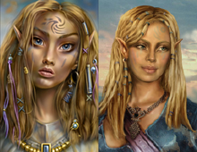 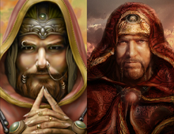 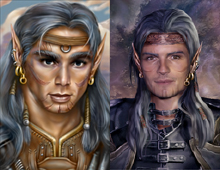 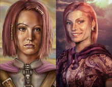 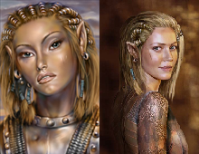
 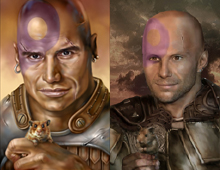
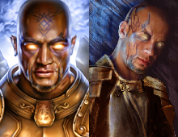
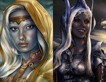
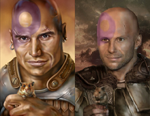
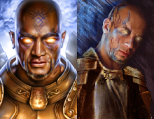
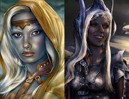
PC Instructions: Please note that this version of the mod is incompatible with previous versions. To install, you must delete any previous version of Phaere’s NPC Portraits and you must delete any existing copy of phaere_ports.tp2.
Run the self-extracting installer. To accommodate players with multiple installations of BG2, you will be required to choose your installation directory. This directory must contain CHITIN.KEY and DIALOG.TLK. The WeiDU installer will be automatically run after all of the files have been extracted. Choose your favorite language and decide which components to install.
Mac OS X Instructions: This mod is not compatible with the Mod Organizer. Extract everything in the .zip file to your BG2 main folder (this should be the same directory that contains the dialog.tlk file). Make sure that your extractor keeps all the folder information intact or the installation will fail. Once all files are extracted, double-click on setup-
Run the WeiDU installer (either setup-phaere_ports.exe on a PC or setup-phaere_ports.command on a Mac) and choose to uninstall. Please note that you can remove the new portraits for one NPC while leaving the others unchanged. Changing the portraits will have no effect on a saved game (although it may cause the original portrait to be displayed for the epilogue instead of the new one).
The mod is not compatible with other mods that change NPC portraits. Phaere’s NPC Portraits will function properly with those mods but any new NPC portraits that were added by any other mods will not be seen in-game.
None.
Version 5.0
- Added phaere_ports.ini metadata file to support AL|EN's "Project Infinity".
- Added `VERSION` flag.
- Replaced `AT_INTERACTIVE_EXIT` deprecated command with `README`.
- Added missing `REQUIRE_PREDICATE` process to avoid installing the mod in inaccurate games.
- Added components `DESIGNATED` numbers and "phaere_ports_%npc-names%" `LABELS`.
- Modernized and speeded up installation process:
- Externalized tp2 code into gw_install_portraits.tpa library for more comfortable readability and maintenance.
- Renamed portraits sub-folders and script names to fit the new installation function.
- Due to its portrait size (38 x 60), "Bodhi Portrait component" can now only be installed in original games.
- Added native BG2:EE and EET compatibilities.
- Replaced old-school `DECOMPILE_BCS_TO_BAF` plus `COMPILE_BAF_TO_BCS` process with more accurate `DECOMPILE_AND_PATCH` command.
- Added "Continue()" to the script blocks that are patched via `EXTEND_TOP`.
- Fixed a bug with .2da files patching: viconnd1 and viconnd2 (was replacing "NVICONIL" portrait instead of "NVICONL")
- Fixed two bugs with .bcs files patching: aerie (was applying "r#aeport" spell instead of "r#pparie"), was patching sarev25a file instead of sarev25.
- Resized portraits for original games to the right size (medium = 110 x 170 - small = 30 x 60).
- Cleaned up old ids entries patch replaced with more recent BG2 Fixpack one.
- Added French translation (Gwendolyne).
- Removed useless backup folder.
- Reorganized mod architecture tree: created "lang" and "portraits" folders to sort files according to their types.
- Lower cased files.
- Included Linux and Mac Os X versions in the same package (thanks AL|EN's Infinity Auto Packager tool!).
- Upgraded WeiDU installer to v246.
- Uploaded mod to official Spellhold Studios GitHub mirror account.
Version 4.0
- The portrait changes are now retroactive.
- Streamlined some TP2 code.
- Mac OS X now supported.
- Cleaned up BG2 folder.
- SoA-only installation now supported.
- The portrait changes are now retroactive.
- Installer is faster now.
- Upgraded WeiDU installer to v183.
Version 3.0
- Added portraits to Bodhi and Mazzy.
- Another attempt at fixing the bugs with Aerie’s portrait.
- Upgraded WeiDU installer to v168.
Version 2.0
- Added portraits for Sarevok and Jaheira.
- Aerie in ogre form no longer has a portrait.
Version 1.0
- Initial release.